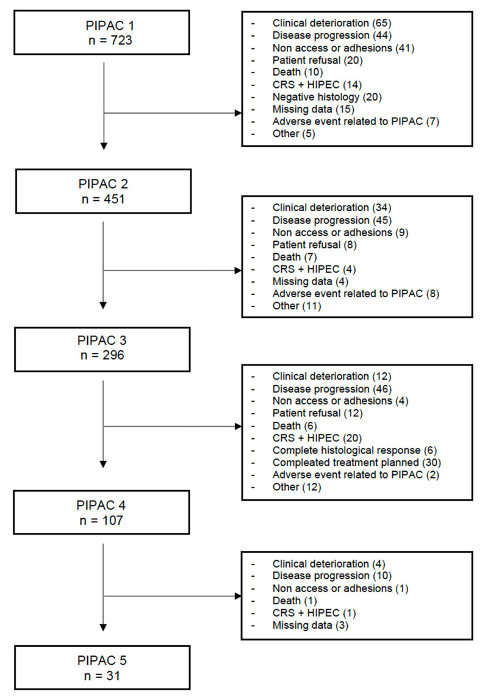
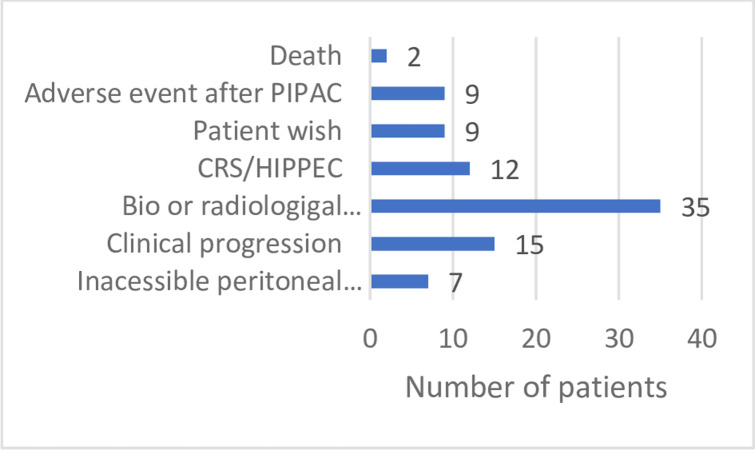
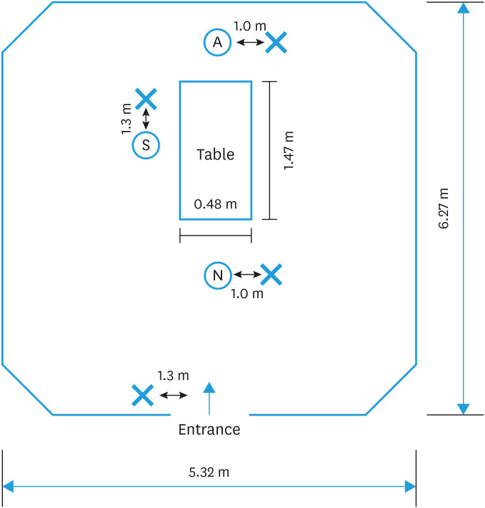

1905 — Biến chứng & an toàn thủ thuật PIPAC: không vào được ổ bụng, thủng ruột do trocar, rò thuốc, nhiễm lỗ trocar và phơi nhiễm nghề nghiệp
Tags: pattern:bien-chung pattern:thung-ruot pattern:ap-xe-sau-mo pattern:ro-thuoc pattern:viem-phuc-mac vung:phuc-mac vung:o-bung vung:thanh-bung protocol:PIPAC protocol:CT-bung-co-can-quang protocol:CTA score:CTCAE score:Clavien-Dindo
Mức chắc chắn (certainty): tổng hợp y văn (literature synthesis) — ghép tổng quan hệ thống 10 năm về PIPAC (53 nghiên cứu) (Cancers 2023, PMC9954579), tổng quan hệ thống lý do ngừng PIPAC (Pleura Peritoneum 2023, PMC10249753), phân tích 96 bệnh nhân ở 3 trung tâm (PLoS One 2023, PMC10688840), báo cáo thứ hai của cơ sở dữ liệu ISSPP với 2.456 lần PIPAC (Pleura Peritoneum 2023, PMC10739278) và nghiên cứu đo phơi nhiễm bạch kim trong phòng mổ (J Gynecol Oncol 2025, PMC11791003). Không có ca do nhóm tự chụp.
Câu hỏi thực hành: bệnh nhân ung thư buồng trứng tái phát phúc mạc, đã CRS/HIPEC 2 lần, đang PIPAC chu kỳ 3. Ngày 2 sau PIPAC: sốt 38,6 °C, đau bụng tăng, bụng chướng. Câu hỏi: đây là đau do thuốc, nhiễm lỗ trocar, hay thủng ruột? Chụp gì, tìm gì, khi nào mổ — và vì sao kíp mổ cũng là "bệnh nhân" của biến chứng này? Bài chốt bốn quyết định: (1) PIPAC an toàn nhưng không "vô hại": không vào được ổ bụng 3,5–7,3%, biến chứng nặng CTCAE ≥ 3 khoảng 4%, tử vong 30 ngày 1,3–3,4% — phần lớn do thủng ruột không nhận ra; (2) sốt + đau sau PIPAC phải chụp CT có cản quang tìm khí tự do/dịch/áp-xe lỗ trocar, không quy cho "đau do hóa chất"; (3) khí trong ổ bụng ngay sau PIPAC là bình thường — chỉ có giá trị khi tăng dần, kèm dịch/khí trong thành hoặc nhiễm trùng; (4) phơi nhiễm nghề nghiệp chủ yếu qua bề mặt và găng tay, không phải không khí — đo được bạch kim trên 100% mẫu bề mặt dù không khí dưới ngưỡng phát hiện. Nối 1903 – Theo dõi sau CRS/HIPEC & PIPAC, 910 – Dẫn lưu áp-xe, PTBD & thận qua da, 162 – Tắc ruột non/già & thiếu máu mạc treo, 141 – Phúc mạc: cổ trướng, carcinomatosis vs lao.
1. Tổng quan – cơ chế hình ảnh: vì sao "chỉ bơm thuốc" lại gây thủng ruột và nhiễm bề mặt
- PIPAC (pressurized intraperitoneal aerosol chemotherapy) là phẫu thuật nội soi nhỏ chứ không phải "chọc hút": đặt 2 trocar, bơm hỗn dịch thuốc độc tế bào dạng aerosol vào ổ bụng dưới áp lực 12 mmHg trong 30 phút, rồi hút khí qua hệ kín có lọc trước khi rút trocar (PMC10688840). Mọi biến chứng đều xoay quanh ba thời điểm: lúc vào ổ bụng, lúc giữ áp lực, và lúc rút trocar/rò thuốc.
- TẠI SAO khó vào ổ bụng: bệnh nhân PIPAC thường đã mổ CRS/HIPEC nhiều lần → dính phúc mạc dày, mạc nối bánh kẹp (omental cake), phúc mạc xơ hóa do chính hóa chất lặp lại; ruột có thể dính ngay dưới thành bụng. Vì vậy không vào được (non-access) là biến chứng đặc trưng của PIPAC, không phải "lỗi kỹ thuật hiếm". 70% ca non-access xảy ra ngay lần PIPAC đầu (PMC9954579).
- TẠI SAO thủng ruột là biến chứng chết người: kim Veress hoặc trocar chọc qua ruột dính thành bụng tạo lỗ thủng nhỏ, ban đầu không có triệu chứng; sau đó dịch tiêu hóa + khí + vi khuẩn vào ổ bụng → viêm phúc mạc trong 24–72 giờ. Thủng ruột là nguyên nhân hàng đầu của tử vong sau PIPAC (0–2% các thủ thuật), đặc biệt khi không nhận ra trong mổ (PMC10688840). Đây là lý do câu hỏi hình ảnh "có khí tự do/dịch mới sau PIPAC không" quan trọng hơn "u có nhỏ đi không".
- TẠI SAO hình ảnh sau PIPAC dễ đọc sai: sau thủ thuật luôn có bơm hơi ổ bụng (pneumoperitoneum) tồn dư vài ngày, dịch thấm phúc mạc, dày phúc mạc do hóa chất — tất cả bắt chước thủng ruột/nhiễm trùng. Ngược lại, viêm phúc mạc do thủng nhỏ có thể chỉ biểu hiện bằng dịch đục, khí "lạc chỗ", dày thành ruột khu trú mà không có khí tự do lượng lớn.
- Tần suất – con số để tư vấn (định lượng):
- Không vào được ổ bụng: gộp 4% các thủ thuật (0–18,8%) trong 53 nghiên cứu; 70% ở lần PIPAC đầu (PMC9954579). Tổng quan lý do ngừng: 6,8%, có loạt tới 30% (PMC10249753). Cơ sở dữ liệu ISSPP 2.456 lần PIPAC: 3,5%, giảm từ 7,8% ở lần đầu xuống 1,5% các lần sau (p < 0,01) (PMC10739278). Loạt 3 trung tâm: 7,3% lần đầu, 7,9% lần 2–3, 11,6% khi gộp các lần sau (PMC10688840).
- Biến chứng nặng CTCAE 3–4: 4% (0–38,5%) (PMC9954579); trung vị 3,1% (0,8–6,2%) (PMC10249753); ISSPP: 134/1.703 biến cố (8%) ở mức ≥ 3, trong đó 95 biến chứng ngoại khoa, 22% là ≥ 3b Dindo–Clavien (PMC10739278).
- Tử vong 30 ngày: 1,3% (26/1.936) trong tổng quan 10 năm, nguyên nhân hàng đầu là tiến triển bệnh (PMC9954579); 0,5% (0–3,9%) trong tổng quan lý do ngừng (PMC10249753); 3,4% (23/669) trong ISSPP (PMC10739278). Tử vong do chính thủ thuật 0–2%, chủ yếu thủng ruột không nhận ra hoặc tắc ruột (PMC10688840).
- Thủng ruột do kim/trocar: 0–3% các thủ thuật; đây là biến chứng trong mổ hay gặp nhất (PMC10249753 dẫn Alyami: 45 nghiên cứu/1.810 thủ thuật/838 bệnh nhân, 3% biến chứng ngoại khoa).
- Biến cố bất lợi chung: đau bụng, buồn nôn, nôn, táo bón, bí tiểu chiếm 72% các biến cố; 8% ở mức ≥ 3 (PMC10739278).
- TẠI SAO kíp mổ cũng bị phơi nhiễm: cisplatin là chất có khả năng gây ung thư ở người (IARC nhóm 2A); hạt aerosol có kích thước 3–15 µm nên có thể lơ lửng và đi vào đường thở nếu rò ở trocar. Nghiên cứu đo bạch kim (chất đại diện cho cisplatin) trong phòng mổ: không khí dưới ngưỡng phát hiện ở cả 16 mẫu, nhưng bạch kim có mặt ở 23/23 mẫu bề mặt (0,02–235,09 ng/cm²), cao nhất ở trocar thứ hai (trung bình nhân 5,55 ng/cm²), và 18/21 (86%) mẫu trên phương tiện bảo hộ (khẩu trang, găng, giày) (PMC11791003). Kết luận thực hành: nguy cơ chính là bề mặt/găng tay, không phải không khí — nên thay găng, lau bề mặt, không "tin" vào cảm giác an toàn vì không khí sạch.
2. Mẫu hình + chẩn đoán phân biệt theo thời điểm và vị trí (Gamut)
- Theo thời điểm so với thủ thuật:
- Trong mổ: không vào được ổ bụng; thủng ruột/mạch máu khi đặt trocar; tràn khí dưới da; rò thuốc tại trocar; loạn nhịp/tụt áp do bơm hơi.
- 24–72 giờ: đau bụng do hóa chất (chemical peritonitis), nhiễm lỗ trocar, thủng ruột biểu hiện muộn, tắc ruột, chảy máu thành bụng.
- 1–4 tuần: áp-xe lỗ trocar, nhiễm trùng vết mổ, huyết khối tĩnh mạch, giảm bạch cầu có sốt (neutropenic sepsis), tiến triển bệnh.
- Theo vị trí hình ảnh:
- Thành bụng/lỗ trocar: tụ dịch, khí trong thành, áp-xe, máu tụ — vị trí hay bị bỏ qua nhất vì CT thường chỉ đọc ổ bụng.
- Khoang phúc mạc: khí tự do, dịch mật độ cao, dày phúc mạc lan tỏa (hóa chất) vs dày khu trú + khí trong thành ruột (thủng).
- Sau phúc mạc/ruột: tắc ruột, viêm tụy cấp do thuốc, thiếu máu ruột (hiếm).
- Gamut "sốt + đau bụng sau PIPAC" (thứ tự cần loại trừ): thủng ruột/viêm phúc mạc, áp-xe lỗ trocar, nhiễm trùng huyết do giảm bạch cầu, tắc ruột do u/dính, viêm túi mật/viêm tụy, huyết khối tĩnh mạch, tiến triển bệnh.
- Mnemonic "A.C.T.S.": Access failure (non-access), Chemical peritonitis (đau do thuốc), Trocar complications (nhiễm/rò/máu tụ), Sepsis/perforation (thủng ruột, nhiễm trùng huyết).
3. Bảng so sánh phân biệt (ma trận đối chiếu)
| Thực thể (entity) | Hình ảnh điển hình | Chốt vào (rule-in) | Chốt loại (rule-out) | Gợi ý xác nhận |
|---|---|---|---|---|
| Thủng ruột do trocar | Khí tự do tăng dần, dịch/tụ dịch cạnh quai ruột, khí trong thành ruột, dày thành khu trú, có thể mảnh thức ăn | Sốt + đau tăng sau 24–72 giờ + khí tự do mới/tăng + dịch cạnh ruột | Khí tự do ổn định, không dịch, không sốt ngay sau PIPAC → hơi tồn dư | CT bụng–chậu cản quang; so phim ngay sau thủ thuật; mổ khi lâm sàng xấu |
| Áp-xe/nhiễm lỗ trocar | Tụ dịch quanh trocar ở thành bụng, viền ngấm thuốc, khí trong ổ | Sưng/đỏ/đau tại lỗ trocar + sốt + tụ dịch thành bụng | Tổn thương trong ổ bụng, không liên quan lỗ trocar → nghĩ nguyên nhân khác | Siêu âm đầu dò thẳng/CT; chọc hút dưới hướng dẫn |
| Viêm phúc mạc hóa chất (chemical peritonitis) | Dày phúc mạc lan tỏa, đối xứng, dịch lượng ít–trung bình, không khí tự do, không ổ dịch | Đau bụng sau bơm, không sốt cao, CT không ổ nhiễm, tự giảm 3–7 ngày | Có ổ dịch/khí tự do/sốt cao → không phải thuần hóa chất | Theo dõi 48–72 giờ; CT lặp nếu xấu |
| Tắc ruột do u/dính | Giãn quai ruột, mức dịch–khí, điểm chuyển tiếp, không khí tự do | Nôn, bụng chướng, không trung tiện + hình ảnh tắc | Không giãn quai, có khí tự do/dịch → nghĩ thủng | CT cản quang; hội chẩn ngoại |
| Nhiễm trùng huyết do giảm bạch cầu | CT không ổ nhiễm rõ, có thể chỉ dày ruột nhẹ; không khí tự do | Sốt + hạ bạch cầu trung tính trong 7–14 ngày sau hóa chất | Có ổ dịch/khí tự do rõ → có nguồn ngoại khoa | Công thức máu, cấy máu; CT để loại trừ ổ |
| Rò thuốc/ô nhiễm tại trocar (không nhiễm trùng) | Không có tổn thương trong ổ; dấu bẩn bề mặt trocar/da | Thấy dịch thuốc rỉ ra khi bơm/rút trocar, áp lực tụt | Không rò, áp lực ổn định → không phải | Kiểm tra trực tiếp; đo nồng độ bạch kim bề mặt (nghiên cứu) |
| Tiến triển bệnh phúc mạc | Tổn thương to lên, nốt mới, cổ trướng tăng, không khí tự do | Tăng kích thước/số nốt qua các chu kỳ + không ổ nhiễm | Nhỏ đi/ổn định, không nốt mới → không tiến triển | CT có cản quang; PRGS trên sinh thiết (bài 1903) |

*Sơ đồ 723 bệnh nhân bắt đầu PIPAC 1: không vào được ổ bụng/dính 41 ca (5,7%), biến cố liên quan PIPAC 7 ca (1,0%); PIPAC 2 (451 ca): non-access 9, biến cố 8; PIPAC 3 (296 ca): non-access 4, biến cố 2; PIPAC 4 (107 ca): non-access 1. Điểm cần nhớ: non-access tập trung ở lần đầu, còn biến cố bất lợi rải đều — không phải "càng nhiều chu kỳ càng nguy hiểm". Nguồn: Cancers 2023 (PMC9954579), CC BY 4.0.*Dấu hiệu đọc chuẩn xác trên CT sau PIPAC
- So với phim ngay sau thủ thuật (nếu có): khí tự do ổn định/giảm là tồn dư; khí tăng + dịch mới là thủng cho tới khi chứng minh ngược.
- Đọc thành bụng trước, ổ bụng sau: mọi tụ dịch dọc đường trocar phải được mô tả kích thước, HU, có khí, có viền ngấm thuốc.
- Khí trong thành ruột (pneumatosis) + khí trong tĩnh mạch cửa = dấu hiệu thiếu máu/thủng ruột nặng, cần mổ khẩn, không chờ cấy.
- Dày phúc mạc lan tỏa đối xứng không ổ dịch sau PIPAC thường là hiệu ứng hóa chất, đừng gọi "tiến triển" — đối chiếu bài 1903 (đáp ứng chỉ chấm bằng PRGS).
4. Protocol thủ thuật – phân độ biến chứng – quy tắc dừng
- Trước mỗi chu kỳ: CT bụng–chậu có cản quang để tính PCI, loại trừ tiến triển ngoài phúc mạc/tắc ruột và xác định đường vào (tránh vùng dính/mạc nối lớn). Không dùng CT để chấm đáp ứng — dùng PRGS (bài 1903).
- Trong thủ thuật (theo mô tả của loạt 3 trung tâm, PMC10688840): 2 trocar; capnoperitoneum 12 mmHg; bơm thuốc; giữ 30 phút; hút khí qua hệ kín có lọc trước khi mở ổ bụng; đóng lỗ trocar. Kiểm tra rò ở trocar bằng mắt và bằng áp lực — tụt áp không rõ nguyên nhân = nghi rò.
- Phân độ biến chứng: dùng CTCAE cho biến cố toàn thân (đau, nôn, giảm bạch cầu) và Clavien–Dindo cho biến chứng ngoại khoa; ≥ 3b = cần can thiệp/mổ lại. Đây là hai thang không thay thế nhau.
- Quy tắc chọn bệnh nhân / dừng (đồng thuận từ tổng quan 10 năm, PMC9954579): không PIPAC khi tiên lượng sống < 3 tháng**, **tắc ruột gần đây**, **không ăn được đường miệng/phải nuôi tĩnh mạch hoàn toàn**, **ECOG > 3.
- Xử trí theo tình huống:
| Tình huống | Việc cần làm ngay | Ngưỡng quyết định |
|---|---|---|
| Không vào được ổ bụng | Dừng, không cố chọc mù nhiều lần; ghi nhận non-access; cân nhắc mở mini-laparotomy hoặc chuyển PIPAC đường mở ở lần sau | Tái thử sau 4–6 tuần; 70% non-access ở lần đầu → đừng kết luận "không làm được nữa" |
| Nghi thủng ruột trong mổ | Khâu lỗ thủng ngay nếu thấy; nếu không thấy mà dịch ruột/bẩn → mở kiểm tra, không đóng trocar rồi về | Không tiếp tục bơm thuốc khi nghi thủng |
| Sốt/đau sau 24–72 giờ | CT bụng–chậu cản quang; cấy máu; hội chẩn ngoại | Khí tự do tăng/dịch mới/khí trong thành = mổ; không có ổ → theo dõi 48 giờ |
| Rò thuốc tại trocar | Dừng bơm, kiểm tra hệ kín, thay găng/khăn, lau bề mặt; ghi nhận sự cố | Rò lặp lại → đổi kỹ thuật trocar/nebulizer |
| Áp-xe lỗ trocar | Siêu âm/CT; chọc hút + dẫn lưu dưới hướng dẫn + kháng sinh | Không đáp ứng 48–72 giờ → mở dẫn lưu |
flowchart TD
A[Sốt hoặc đau bụng sau PIPAC 24-72 giờ] --> B[CT bụng-chậu có cản quang]
B --> C{Khí tự do mới hoặc tăng, dịch cạnh ruột, khí trong thành?}
C -->|Có| D[Mổ khẩn: khâu thủng, rửa ổ bụng, kháng sinh]
C -->|Không| E{Tụ dịch quanh lỗ trocar?}
E -->|Có| F[Chọc hút hoặc dẫn lưu dưới hướng dẫn + kháng sinh]
E -->|Không| G{Bạch cầu trung tính giảm?}
G -->|Có| H[Nhiễm trùng huyết: cấy máu, kháng sinh phổ rộng, theo dõi]
G -->|Không| I[Viêm phúc mạc hóa chất hoặc tiến triển: theo dõi 48 giờ, CT lặp]
F --> J{Không đáp ứng 48-72 giờ?}
J -->|Có| D
J -->|Không| K[Tiếp tục kháng sinh, đánh giá lại trước chu kỳ sau]
D --> L[Ghi nhận CTCAE và Clavien-Dindo; xem lại chỉ định PIPAC]
5. Biến thể bình thường và cạm bẫy
- Bẫy 1 — gọi khí tự do sau PIPAC là thủng: sau bơm 12 mmHg trong 30 phút, một lượng khí tồn dư vài ngày là bình thường. Chỉ khí tăng dần, có dịch mới, khí trong thành ruột/tĩnh mạch cửa, hoặc lâm sàng xấu mới là thủng.
- Bẫy 2 — bỏ sót thành bụng: đọc CT chỉ tập trung phúc mạc/gan sẽ bỏ áp-xe lỗ trocar — nguyên nhân sốt rất hay gặp. Luôn cuộn cửa sổ mô mềm dọc đường trocar.
- Bẫy 3 — quy "đau bụng" cho hóa chất mà không chụp: viêm phúc mạc hóa chất là chẩn đoán loại trừ; phải loại thủng ruột/áp-xe/giảm bạch cầu trước.
- Bẫy 4 — tưởng non-access là tiến triển: không vào được ổ bụng là thất bại kỹ thuật, không phải bằng chứng bệnh nặng lên; nhưng xơ hóa phúc mạc sau nhiều chu kỳ vừa gây non-access vừa bắt chước tiến triển trên CT.
- Bẫy 5 — tin vào "không khí sạch": bạch kim dưới ngưỡng trong không khí nhưng có trên 100% mẫu bề mặt và 86% mẫu bảo hộ (PMC11791003). An toàn nghề nghiệp nằm ở quy trình bề mặt/găng/trocar, không phải ở cảm giác "không mùi".
- Bẫy 6 — dùng RECIST/CT để đánh giá đáp ứng: xơ hóa do PIPAC làm tổn thương nhỏ đi mà vẫn còn tế bào sống; đáp ứng chỉ chấm bằng PRGS trên sinh thiết 4 góc (bài 1903).
- Bẫy 7 — không ghi nhận biến cố: thiếu CTCAE/Clavien–Dindo làm mất khả năng so sánh giữa các chu kỳ và giữa các trung tâm; đây là dữ liệu bắt buộc của cơ sở dữ liệu PIPAC.
6. Tự lượng giá — Blind Quiz
Ca 1 — Sơ đồ lý do ngừng PIPAC qua 4 chu kỳ. Nhìn hình, trả lời trước khi mở đáp án.
- Câu hỏi 1: Ở PIPAC 1, hai lý do ngừng phổ biến nhất là gì? Trong đó non-access chiếm bao nhiêu ca?
- Câu hỏi 2: Vì sao tỷ lệ non-access giảm mạnh ở các lần sau, còn biến cố bất lợi thì không?
Bấm để hiện đáp án (findings + chẩn đoán)
- Dấu hiệu: PIPAC 1 (n = 723) — suy sút lâm sàng 65, tiến triển bệnh 44, non-access/dính 41 (5,7%), từ chối 20, tử vong 10, chuyển CRS/HIPEC 14, mô học âm 20, biến cố liên quan PIPAC 7 (1,0%). PIPAC 2 (451): non-access 9, biến cố 8; PIPAC 3 (296): non-access 4, biến cố 2.
- Chẩn đoán/ý nghĩa: non-access là biến cố của "lần đầu" (70% tập trung ở lần đầu), vì dính và đường vào chưa được "lập bản đồ"; các lần sau đã biết đường vào. Ngược lại biến cố hóa chất phụ thuộc tích lũy liều nên rải đều.
- Nguồn ảnh: Cancers 2023 (PMC9954579), CC BY 4.0.
Ca 2 — 96 bệnh nhân ở 3 trung tâm: lý do ngừng PIPAC.

- Câu hỏi 3: Lý do ngừng phổ biến nhất là gì, chiếm bao nhiêu ca? Biến cố sau PIPAC chiếm bao nhiêu, và vì sao con số này quan trọng hơn "tỷ lệ biến chứng chung"?
Bấm để hiện đáp án
- Dấu hiệu: tiến triển sinh học/radiologic 35 ca, suy sút lâm sàng 15, CRS/HIPEC 12, biến cố sau PIPAC 9 (10,1%), nguyện vọng bệnh nhân 9, không vào được ổ bụng 7 (7,9%), tử vong 2.
- Ý nghĩa: 10,1% bệnh nhân mất cơ hội hoàn tất 3 chu kỳ vì biến cố — đây là con số tư vấn trực tiếp cho bệnh nhân, khác với "tỷ lệ biến chứng/thủ thuật" (3–4%). Trong phân tích nhóm, biến cố là lý do ngừng có ý nghĩa thống kê ở nhóm < 3 chu kỳ (16,3% vs 4,3%).
- Nguồn ảnh: PLoS One 2023 (PMC10688840), CC BY 4.0.
Ca 3 — Sơ đồ vị trí lấy mẫu không khí trong phòng mổ PIPAC.

- Câu hỏi 4: Vì sao phải đo cả không khí và bề mặt? Kết quả nào bất ngờ, và điều đó thay đổi quy trình bảo hộ thế nào?
Bấm để hiện đáp án
- Dấu hiệu: sơ đồ bố trí phẫu thuật viên (S), điều dưỡng (N), bác sĩ gây mê (A) và các điểm lấy mẫu không khí cách bàn mổ 1,0–1,3 m.
- Kết quả: không khí: bạch kim dưới ngưỡng phát hiện ở 16/16 mẫu (LOD 0,37 ng/mẫu); bề mặt: 23/23 mẫu dương, 0,02–235,09 ng/cm², cao nhất ở trocar thứ hai (trung bình nhân 5,55 ng/cm²); 18/21 (86%) mẫu trên khẩu trang/găng/giày dương.
- Ý nghĩa: đường phơi nhiễm chính là bề mặt → găng tay (khi tháo trocar, thay bơm, lau máy), không phải hít không khí. Quy trình: thay găng sau mỗi lần chạm trocar/dây, lau bề mặt bằng dung môi phù hợp, huấn luyện tháo đồ bảo hộ.
- Nguồn ảnh: J Gynecol Oncol 2025 (PMC11791003), CC BY-NC 4.0, nguyên bản.
Bài liên quan chéo
- 1903 – Theo dõi sau CRS/HIPEC & PIPAC: PCI, CCR, PRGS
- 910 – Dẫn lưu áp-xe, PTBD & thận qua da
- 162 – Tắc ruột non/già & thiếu máu mạc treo
- 141 – Phúc mạc: cổ trướng, carcinomatosis vs lao
- 1635 – Vỡ ối non tháng sau can thiệp bào thai: lỗ trocar & xử trí
Không dùng để chẩn đoán độc lập khi chưa có người hướng dẫn.